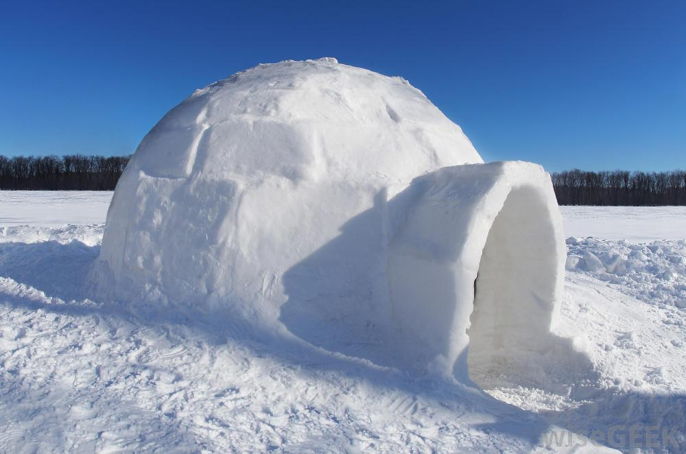

 Τα φυσικά υλικά κατασκευής ενός καταφυγίου στην Αρκτική ποικίλλουν ανάλογα με το γεωγραφικό πλάτος και την εποχή. Στα επιπλέοντα κομμάτια από παγόβουνα, το καταφύγιο σας θα περιορίζεται στο χιόνι και στον πάγο. Η τούνδρα έχει το πρόσθετο πλεονέκτημα των μικρών θάμνων και βρύων, ενώ το δάσος κάτω από το όριο βλάστησης προσφέρει αφθονία υλικού κατασκευής καταφυγίων.
Το χιόνι θα ποικίλλει από πλευράς ύψους και πυκνότητας. Το στοιχείο αυτό θα είναι αποφασιστικός παράγοντας για τον τύπο του καταφυγίου που θα κατασκευάσετε. Ενώ μερικά καταφύγια είναι απλά ως προς την κατασκευή, άλλα απαιτούν κάποιο βαθμό προσπάθειας και χρόνου, ιδίως αυτά που πρόκειται να χρησιμοποιηθούν για πολύ χρόνο.
Αν η κατασκευή γίνει σε μια δασώδη περιοχή , να προσέχετε τα δέντρα που σαπίζουν ή πέφτουν και να φυλάγεστε από την απόσπαση κλαδιών που είναι φορτωμένα με χιόνι. Σε ορεινές περιοχές, ψάξτε να βρείτε σπηλιές ή προεξέχοντα τμήματα κατασκευών ή βράχων, αλλά να έχετε υπόψη τον κίνδυνο από κατολισθήσεις χιονοστιβάδων ή βράχων.
Ως οδηγό για την κατασκευή ενός καταφυγίου στην Αρκτική, μελετήστε τις παραδοσιακές συνήθειες της ζωής των Εσκιμώων της Βορείου Αμερικής και της Γροιλανδίας, οι οποίοι είναι γνωστοί με το όνομα Ινουίτ. Κατά τον χειμώνα οι περισσότεροι από τους Ινουίτ ζούσαν σε καταφύγια από χλοοτάπητα, που κατασκεύαζαν πριν έλθει ο χειμώνας. Σε πολλές περιπτώσεις, το δάπεδο κατασκευάζοταν με εκσκαφή μέσα στο έδαφος, για να είναι θερμότερο. Οι θολωτές παγοκαλύβες (igloo), που συνήθως συνδέονται με τους κατοίκους αυτούς, χρησιμοποιούνταν κατά την διάρκεια του κυνηγιού, αν και πολλοί από τους Ινουίτ του Καναδά κατασκευάζουν τα igloo ως μόνιμη κατοικία.
Οι σκηνές που κατασκευάζονται από δέρματα ζώων χρησιμοποιούνται το καλοκαίρι. Οι σκήνες αυτές κανονικά είχαν ένα πλαίσιο από μπαλένα ή ξύλο καλυμμένο με δέρμα ταράνδου ή φώκιας. Τόσο τα χειμερινά όσο και τα καλοκαιρινά καταφύγια ήταν εφοδιασμένα με αρκετά καλύμματα από δέρματα ζώων που σχημάτιζαν τους χώρους καθιστικού ή ύπνου. Η θερμότητα και το φως παρέχοταν από λάμπες στεατίνης που έκαιγαν λίπος φώκιας.